X8¶
NAGEL POINT
nagel_point(A, B, C) -> X_8 • Nagel (1836) • Kimberling X(8) • Search Value \((6, 9, 13)\): \(\frac{16 \sqrt{35}}{21} \approx 4.507489358552\)
X8 (NAGEL POINT) constructed at X8 = \(\left(7,\; 4\right)\) in exact rational coordinates on the Heronian reference triangle \((a, b, c) = (15, 13, 14)\) over \(\mathbb{Q}\) with vertices A = \((0, 0)\), B = \((14, 0)\), C = \((5, 12)\), and area \(\Delta = 84\). Switch tabs above to inspect exact constructions on Right \((3, 4, 5)\), Kepler \((1, \sqrt{\phi}, \phi)\), and Kimberling \((6, 9, 13)\).¶
Constructed Elements
Derived Triangle: Extouch Triangle △NaNbNc — vertices Na, Nb, Nc (Contact triangle of Excircle touchpoints on BC, CA, AB)
Concurrence Lines (Nagel Splitters): A–Na, B–Nb, C–Nc concurring at X8
Homogeneous Coordinates & Exact Invariants¶

Homogeneous Coordinates of X8 on Heronian \((15, 13, 14)\): orthogonal trilinear struts \((\alpha, \beta, \gamma)\) and signed barycentric sub-triangles \((\Delta_a, \Delta_b, \Delta_c)\).¶
Trilinear Coordinates (\(\alpha : \beta : \gamma = 52 : 80 : 65\)): Dropping orthogonal perpendiculars X8Ta, X8Tb, and X8Tc from X8 to sidelines BC, CA, and AB meets the sides at right-spread pedal feet Ta = \(\left(\frac{239}{25},\; \frac{148}{25}\right)\), Tb = \(\left(\frac{415}{169},\; \frac{996}{169}\right)\), and Tc = \(\left(7,\; 0\right)\). The orthogonal strut lengths on \((15, 13, 14)\) are \(d_a = \frac{16}{5}\), \(d_b = \frac{64}{13}\), and \(d_c = 4\), reducing to homogeneous trilinears \(\alpha : \beta : \gamma = 52 : 80 : 65\).
Barycentric Coordinates (\(u : v : w = 6 : 8 : 7\)): Joining X8 to the vertices along X8A, X8B, and X8C forms signed sub-triangles △X8BC, △X8CA, and △X8AB of exact signed areas \(\Delta_a = 24\), \(\Delta_b = 32\), and \(\Delta_c = 28\) (summing to \(\Delta_a + \Delta_b + \Delta_c = 84 = \Delta\)), in homogeneous ratio \(u : v : w = 6 : 8 : 7\).
Reference Triangle |
Field |
Cartesian \((x, y)\) |
Trilinears \(\alpha : \beta : \gamma\) |
Barycentrics \(u : v : w\) |
Sub-Areas \((\Delta_a, \Delta_b, \Delta_c)\) |
Directed Trilinear \((d_a,\, Q_a)\) |
|---|---|---|---|---|---|---|
Heronian \((15, 13, 14)\) |
\(\mathbb{Q}\) |
\(\left(7,\; 4\right)\) |
\(52 : 80 : 65\) |
\(6 : 8 : 7\) |
\(\left(24,\; 32,\; 28\right)\) |
\(\frac{16}{5}\; (Q_a = \frac{256}{25})\) |
Right \((3, 4, 5)\) |
\(\mathbb{Q}\) |
\(\left(\frac{11}{5},\; \frac{2}{5}\right)\) |
\(10 : 5 : 2\) |
\(3 : 2 : 1\) |
\(\left(3,\; 2,\; 1\right)\) |
\(2\; (Q_a = 4)\) |
Kepler \((1, \sqrt{\phi}, \phi)\) |
\(\mathbb{Q}(\sqrt{\phi})\) |
\(\left(2 - \sqrt{\phi},\; \phi \sqrt{\phi} - 2 \sqrt{\phi} + \phi - 1\right)\) |
\(\sqrt{\phi} + \phi - 1 : \phi \sqrt{\phi} - 1 : \phi \sqrt{\phi} - \sqrt{\phi} + \phi - 2\) |
\(\sqrt{\phi} + \phi - 1 : - \sqrt{\phi} + \phi + 1 : \sqrt{\phi} - \phi + 1\) |
\(\left(\frac{\phi}{2} - \frac{1}{2},\; \frac{\phi \sqrt{\phi}}{2} - \frac{\phi}{2},\; - \frac{\phi \sqrt{\phi}}{2} + \frac{\sqrt{\phi}}{2} + \frac{1}{2}\right)\) |
\(\phi - 1\; (Q_a = 2 - \phi)\) |
Kimberling \((6, 9, 13)\) |
\(\mathbb{Q}(\sqrt{35})\) |
\(\left(\frac{68}{13},\; \frac{4 \sqrt{35}}{91}\right)\) |
\(156 : 65 : 9\) |
\(8 : 5 : 1\) |
\(\left(\frac{16 \sqrt{35}}{7},\; \frac{10 \sqrt{35}}{7},\; \frac{2 \sqrt{35}}{7}\right)\) |
\(\frac{16 \sqrt{35}}{21}\; (Q_a = \frac{1280}{63})\) |
Alternate Coordinates7 forms
Trilinears: \(\csc^{2}(A/2) : \csc^{2}(B/2) : \csc^{2}(C/2)\)
Trilinears: \((bc + S_{A})/a : (ca + S_{B})/b : (ab + S_{C})/c\)
Trilinears: \((1 + \cos A)a^{-2} : :\)
Trilinears: \((r/R) - \sin B \sin C : :\)
Barycentrics: \(\cot A/2 : \cot B/2 : \cot C/2\)
Barycentrics: square of semi-minor axis of A-Soddy ellipse : :
Barycentrics: \(bc + S_{A} : ca + S_{B} : ab + S_{C}\)
Incident Central Lines¶
Principal Central Lines Through X8 on Heronian \((15, 13, 14)\).¶
Nagel Line {1, 2, 8, 10} — collinear axis through X1 (Incenter, \(\left(6,\; 4\right)\)), X2 (Centroid, \(\left(\frac{19}{3},\; 4\right)\)), X8, X10 (Spieker Center, \(\left(\frac{13}{2},\; 4\right)\)), with exact Cartesian equation \(y - 4 = 0\) (spread \(0\), parallel to baseline AB).
Gergonne Point–Orthocenter Of The Intouch Triangle Central Line {7, 8, 65} — collinear axis through X7 (Gergonne Point, \(\left(\frac{414}{73},\; \frac{288}{73}\right)\)), X8, X65 (Orthocenter Of The Intouch Triangle, \(\left(\frac{358}{65},\; \frac{256}{65}\right)\)), with exact Cartesian equation \(4 x - 97 y + 360 = 0\) (spread \(\frac{16}{9425}\) relative to AB).
Orthocenter–Isogonal Conjugate Of X28 Central Line {4, 8, 72} — collinear axis through X4 (Orthocenter, \(\left(5,\; \frac{15}{4}\right)\)), X8, X72 (Isogonal Conjugate Of X28, \(\left(\frac{487}{65},\; \frac{264}{65}\right)\)), with exact Cartesian equation \(x - 8 y + 25 = 0\) (spread \(\frac{1}{65}\) relative to AB).
Circumcenter–Anticomplement Of Feuerbach Point Central Line {3, 8, 100} — collinear axis through X3 (Circumcenter, \(\left(7,\; \frac{33}{8}\right)\)), X8, X100 (Anticomplement Of Feuerbach Point, \(\left(7,\; -4\right)\)), with exact Cartesian equation \(x - 7 = 0\) (spread \(1\), perpendicular to baseline AB).
X8 lies on the Lucas cubic.
Full Incident Central Line Catalog456 lines
{1, 2}, {3, 100}, {4, 72}, {5, 1389}, {6, 594}, {7, 65}, {9, 346}, {11, 1320}, {12, 2099}, {19, 1891}, {20, 40}, {21, 55}, {22, 8193}, {23, 8185}, {25, 7718}, {29, 219}, {30, 3578}, {31, 987}, {32, 5291}, {33, 1039}, {34, 1041}, {35, 993}, {36, 4188}, {37, 941}, {38, 986}, {39, 7976}, {41, 2329}, {44, 4217}, {45, 3943}, {46, 3218}, {56, 404}, {57, 1219}, {58, 996}, {60, 7058}, {76, 668}, {79, 758}, {80, 149}, {81, 1010}, {86, 2334}, {90, 2994}, {101, 1311}, {109, 2370}, {113, 7978}, {114, 7970}, {115, 7983}, {119, 6941}, {125, 7984}, {140, 1483}, {141, 3242}, {142, 3243}, {144, 516}, {147, 9864}, {150, 1930}, {151, 2817}, {153, 2800}, {165, 3522}, {171, 1468}, {172, 4386}, {175, 1270}, {176, 1271}, {177, 556}, {178, 236}, {181, 959}, {188, 2090}, {190, 528}, {191, 3065}, {192, 256}, {193, 894}, {194, 730}, {197, 1603}, {201, 1937}, {210, 312}, {213, 981}, {214, 5445}, {215, 9701}, {220, 294}, {221, 651}, {224, 914}, {226, 3340}, {238, 983}, {244, 3976}, {253, 307}, {274, 1002}, {277, 1280}, {278, 1257}, {279, 7273}, {291, 330}, {304, 3263}, {313, 2997}, {314, 1264}, {315, 760}, {326, 1442}, {344, 480}, {348, 664}, {350, 3789}, {354, 3698}, {376, 3579}, {381, 8148}, {392, 1000}, {394, 3562}, {405, 943}, {406, 1061}, {411, 3428}, {442, 495}, {443, 942}, {474, 999}, {475, 1063}, {479, 7182}, {484, 4299}, {491, 1267}, {492, 5391}, {496, 3820}, {514, 4546}, {521, 4397}, {522, 4474}, {523, 4774}, {524, 4363}, {527, 4454}, {529, 3474}, {535, 3245}, {536, 4419}, {537, 4440}, {573, 3588}, {595, 1724}, {596, 4674}, {599, 1086}, {618, 7975}, {619, 7974}, {631, 1385}, {637, 7595}, {641, 7981}, {642, 7980}, {643, 1098}, {645, 4092}, {646, 3271}, {663, 4147}, {672, 3501}, {673, 4437}, {704, 8264}, {712, 4805}, {726, 1278}, {860, 1068}, {885, 3900}, {901, 2757}, {908, 946}, {912, 5553}, {961, 1460}, {965, 2256}, {971, 9961}, {982, 4457}, {1015, 1574}, {1016, 1083}, {1018, 3730}, {1019, 4807}, {1034, 1895}, {1036, 1183}, {1046, 4418}, {1054, 9457}, {1071, 6916}, {1104, 3744}, {1106, 9363}, {1107, 2276}, {1120, 3445}, {1124, 1377}, {1126, 6539}, {1147, 9933}, {1159, 6147}, {1191, 4383}, {1209, 7979}, {1211, 1834}, {1212, 3693}, {1215, 4865}, {1229, 6601}, {1237, 4485}, {1251, 5239}, {1266, 4346}, {1279, 6687}, {1281, 1282}, {1309, 2745}, {1312, 2103}, {1313, 2102}, {1317, 1388}, {1319, 6049}, {1331, 2988}, {1332, 8759}, {1335, 1378}, {1361, 3042}, {1364, 3040}, {1386, 3618}, {1392, 5048}, {1397, 2985}, {1420, 3911}, {1449, 4982}, {1453, 5294}, {1467, 8732}, {1500, 1573}, {1512, 5720}, {1575, 2275}, {1656, 5901}, {1672, 1680}, {1673, 1681}, {1674, 1678}, {1675, 1679}, {1682, 9564}, {1699, 3832}, {1738, 3620}, {1739, 3953}, {1743, 4058}, {1748, 6197}, {1757, 3923}, {1759, 5011}, {1783, 8743}, {1812, 3193}, {1836, 3962}, {1857, 1896}, {1869, 5307}, {1897, 7358}, {1914, 4426}, {1943, 4296}, {1953, 3949}, {1959, 7379}, {1992, 3758}, {1997, 3816}, {2007, 2013}, {2008, 2014}, {2053, 8851}, {2077, 5450}, {2093, 4001}, {2122, 2123}, {2170, 3061}, {2175, 4157}, {2176, 2238}, {2242, 5277}, {2310, 9365}, {2318, 2654}, {2320, 2646}, {2335, 3694}, {2363, 6043}, {2399, 8058}, {2463, 2467}, {2464, 2468}, {2477, 9702}, {2482, 9884}, {2564, 2568}, {2565, 2569}, {2647, 4332}, {2650, 4938}, {2785, 4088}, {2787, 4730}, {2796, 8596}, {2801, 5696}, {2810, 3888}, {2883, 7973}, {2891, 3754}, {2893, 2897}, {2894, 6839}, {2896, 9857}, {2901, 3995}, {2943, 9355}, {3021, 3039}, {3022, 3041}, {3038, 6018}, {3056, 4110}, {3058, 3715}, {3068, 7969}, {3069, 7968}, {3090, 5886}, {3096, 9997}, {3152, 6360}, {3158, 3601}, {3174, 7675}, {3177, 4712}, {3247, 5257}, {3254, 4858}, {3304, 4413}, {3305, 5129}, {3306, 3333}, {3309, 4462}, {3336, 4317}, {3339, 4298}, {3361, 4315}, {3427, 6836}, {3452, 3680}, {3467, 4309}, {3475, 3925}, {3496, 5282}, {3523, 3576}, {3524, 3655}, {3545, 3656}, {3583, 3899}, {3585, 4067}, {3619, 3844}, {3629, 7227}, {3631, 7232}, {3647, 5441}, {3649, 6175}, {3663, 4452}, {3664, 4924}, {3666, 4646}, {3670, 3987}, {3671, 5290}, {3672, 3755}, {3683, 5302}, {3716, 4895}, {3721, 3959}, {3731, 3950}, {3735, 3954}, {3738, 4768}, {3739, 4648}, {3740, 3983}, {3742, 4731}, {3746, 5248}, {3760, 6381}, {3762, 3887}, {3772, 4952}, {3775, 4085}, {3814, 5154}, {3817, 5068}, {3823, 4864}, {3826, 4966}, {3829, 7173}, {3841, 5425}, {3879, 3945}, {3881, 3918}, {3884, 3992}, {3891, 4972}, {3892, 3968}, {3894, 3919}, {3896, 3931}, {3898, 3956}, {3901, 4084}, {3904, 4528}, {3907, 4041}, {3928, 5128}, {3929, 7285}, {3947, 5726}, {3963, 9052}, {3967, 4005}, {3977, 4304}, {3978, 6382}, {3986, 4898}, {3993, 4704}, {4002, 5045}, {4003, 4706}, {4004, 5551}, {4018, 4980}, {4026, 4360}, {4036, 8702}, {4054, 9612}, {4080, 4792}, {4082, 4866}, {4086, 7253}, {4087, 4531}, {4125, 4857}, {4160, 4761}, {4163, 6332}, {4181, 4182}, {4208, 5249}, {4234, 4921}, {4312, 5850}, {4314, 4512}, {4342, 4900}, {4364, 4748}, {4373, 4862}, {4404, 6003}, {4407, 4743}, {4421, 5217}, {4424, 7226}, {4432, 4473}, {4439, 4527}, {4470, 4670}, {4534, 6558}, {4542, 4582}, {4595, 8299}, {4657, 4852}, {4658, 8025}, {4667, 4747}, {4672, 4753}, {4675, 4688}, {4694, 9335}, {4699, 4732}, {4729, 6002}, {4736, 6758}, {4756, 9668}, {4767, 9669}, {4867, 5141}, {4922, 9508}, {4999, 5432}, {5010, 5267}, {5056, 8227}, {5059, 5493}, {5187, 10043}, {5221, 5434}, {5284, 6767}, {5285, 7520}, {5286, 9620}, {5429, 8258}, {5534, 6908}, {5584, 7411}, {5590, 5604}, {5591, 5605}, {5592, 6546}, {5597, 5600}, {5598, 5599}, {5714, 9654}, {5791, 6857}, {5985, 10053}, {6001, 6223}, {6062, 7068}, {6144, 7277}, {6154, 9963}, {6174, 10031}, {6193, 9928}, {6245, 6282}, {6260, 7971}, {6261, 6838}, {6265, 6949}, {6292, 7977}, {6326, 6960}, {6462, 8214}, {6463, 8215}, {6553, 8056}, {6653, 6655}, {6691, 7231}, {6739, 6742}, {6828, 7680}, {6835, 7686}, {6856, 8164}, {6945, 7681}, {6995, 7713}, {7003, 7020}, {7018, 7033}, {7028, 8242}, {7043, 7126}, {7048, 8422}, {7090, 7133}, {7161, 7206}, {7279, 9723}, {7373, 9342}, {7486, 9624}, {7987, 9588}, {8092, 8125}, {8094, 9795}, {8126, 8351}, {8162, 8167}, {8163, 8169}, {8210, 8222}, {8211, 8223}, {8372, 9787}, {8591, 9881}, {8972, 8983}, {9317, 9451}, {9783, 9805}, {9859, 9943}, {10087, 10093}, {10090, 10094}
Functional Relations & Conjugates¶
Conjugate & Homothetic Partners of X8 on Heronian \((15, 13, 14)\).¶
Isogonal Conjugate: X56 (Exsimilicenter(Circumcircle, Incircle), homogeneous barycentrics \(300 : 169 : 224\)) at \(\left(\frac{166}{33},\; \frac{128}{33}\right)\), joined along {8, 56} (isogonal conjugate via \(a^2 vw : b^2 wu : c^2 uv\)).
Isotomic Conjugate: X7 (Gergonne Point, homogeneous barycentrics \(28 : 21 : 24\)) at \(\left(\frac{414}{73},\; \frac{288}{73}\right)\), joined along {7, 8} (isotomic conjugate via \(vw : wu : uv\)).
Complement: X1 (Incenter) at \(\left(6,\; 4\right)\), joined along {1, 8} — complement of X8 dilated from X2 by factor \(-\frac{1}{2}\).
Anticomplement: X145 (Anticomplement Of Nagel Point) at \(\left(5,\; 4\right)\), joined along {8, 145} — anticomplement of X8 dilated from X2 by factor \(-2\).
Circumcircle Inverse: Inversion in circumcircle centered at X3 = \(\left(7, \frac{33}{8}\right)\) (\(Q_R = \frac{4225}{64}\)) maps X8 along {3, 8} (\(Q(X8, X3) = \frac{1}{64}\), scale \(Q_R / Q = 4225\)) to exact algebraic point at \(\left(7,\; -524\right)\) (homogeneous barycentrics \(600 : 338 : -917\)) .
Full Functional Relations Catalog73 relations
X8 = perspector of ABC and the intouch triangle of the medial triangle of ABC. (Randy Hutson, 9/23/2011)
X8 = midpoint of Xi and Xj for these {i,j}: {1, 3632}, {10, 3625}, {40, 5881}, {145, 3621}, {3057, 3893}, {3626, 4701}, {3679, 4677}, {4474, 4814}, {4668, 4816}, {4900, 8275}, {5541, 9897}, {5691, 7991}, {5903, 5904}
X8 = reflection of Xi in Xj for these (i,j): (1, 10), (2, 3679), (3, 5690), (4, 355), (7, 2550), (8, 8), (10, 3626), (11, 3036), (20, 40), (56, 8256), (65, 5836), (69, 3416), (75, 3696), (78, 6736), (86, 4733), (100, 1145), (144, 5223), (145, 1), (147, 9864), (149, 80), (192, 984), (193, 3751), (210, 4711), (315, 4769), (329, 3421), (346, 4901), (376, 3654), (388, 5794), (390, 9), (551, 4745), (663, 4147), (944, 3), (950, 5795), (960, 4662), (962, 4), (1019, 4807), (1043, 3704), (1120, 3756), (1125, 4691), (1280, 4904), (1317, 3035), (1320, 11), (1361, 3042), (1364, 3040), (1392, 7705), (1482, 5), (1483, 140), (1697, 5837), (2098, 1329), (2099, 2886), (2102, 1313), (2103, 1312), (3021, 3039), (3022, 3041), (3057, 960), (3146, 5691), (3161, 10005), (3189, 3913), (3241, 2), (3242, 141), (3243, 142), (3244, 1125), (3434, 3419), (3476, 1376), (3486, 958), (3488, 9708), (3555, 942), (3600, 1706), (3616, 3617), (3617, 4668), (3621, 3632), (3623, 1698), (3625, 4701), (3626, 4746), (3632, 3625), (3633, 3244), (3635, 3634), (3679, 4669), (3685, 3717), (3786, 4111), (3868, 65), (3869, 72), (3872, 4847), (3873, 3753), (3874, 3754), (3875, 3755), (3877, 210), (3878, 3678), (3881, 3918), (3883, 3686), (3884, 4015), (3885, 3057), (3886, 2321), (3889, 3698), (3890, 3697), (3892, 3968), (3894, 3919), (3898, 3956), (3899, 4134), (3901, 4084), (3902, 3706), (3952, 4738), (4318, 1861), (4344, 2345), (4360, 4026), (4363, 4665), (4419, 4643), (4430, 5902), (4454, 4659), (4511, 6735), (4560, 4041), (4643, 4690), (4644, 4363), (4673, 3714), (4693, 4439), (4720, 4046), (4861, 6734), (4864, 3823), (4895, 3716), (4922, 9508), (5048, 5123), (5080, 5176), (5180, 5080), (5263, 594), (5441, 3647), (5603, 5790), (5697, 3878), (5698, 5220), (5710, 5835), (5716, 5793), (5731, 5657), (5734, 5818), (5882, 6684), (5905, 1478), (5919, 3740), (5984, 9860), (6018, 3038), (6193, 9928), (6224, 100), (6327, 4680), (6332, 4163), (6737, 6743), (6740, 6741), (6742, 6739), (6758, 4736), (7192, 4761), (7253, 4086), (7962, 3452), (7970, 114), (7971, 6260), (7972, 214), (7973, 2883), (7974, 619), (7975, 618), (7976, 39), (7977, 6292), (7978, 113), (7979, 1209), (7980, 642), (7981, 641), (7982, 946), (7983, 115), (7984, 125), (8241, 2090), (8591, 9881), (8596, 9875), (8834, 6552), (9263, 291), (9780, 4678), (9785, 2551), (9791, 1654), (9797, 938), (9802, 149), (9809, 153), (9856, 9947), (9884, 2482), (9933, 1147), (9957, 5044), (9963, 6154), (9965, 2093), (10031, 6174)
X8 = isogonal conjugate of X56
X8 = isotomic conjugate of X7
X8 = cyclocevian conjugate of X189
X8 = complement of X145
X8 = anticomplement of X1
X8 = circumcircle-inverse of X17100
X8 = Conway-circle-inverse of X38475
X8 = Xi-Ceva conjugate of Xj for these (i,j): (2, 3161), (4, 2899), (7, 8055), (69, 329), (75, 2), (190, 3239), (290, 3948), (312, 346), (314, 312), (318, 5552), (319, 2895), (333, 9), (341, 7080), (643, 7253), (645, 3700), (646, 650), (664, 6332), (668, 4391), (765, 3952), (1016, 644), (1043, 78), (1219, 3616), (1222, 1), (1494, 3936), (1909, 1655), (2319, 7155), (2985, 6), (3596, 345), (3699, 522), (4076, 3699), (4102, 2321), (4373, 6557), (4554, 4130), (4555, 3904), (4582, 1639), (4997, 2325), (4998, 190), (6063, 344), (6064, 645), (6079, 900), (7017, 281), (7033, 192), (7155, 4903), (7257, 4560), (8817, 7)
X8 = Xi-cross conjugate of Xj for these (i,j): (1, 280), (4, 1034), (9, 2), (10, 318), (11, 522), (40, 7080), (55, 281), (56, 2123), (72, 78), (200, 346), (210, 9), (219, 345), (312, 7155), (346, 6557), (497, 7), (521, 100), (522, 3699), (650, 646), (950, 29), (960, 21), (1145, 6735), (1146, 4391), (1639, 4582), (1837, 4), (1857, 8805), (1864, 282), (2170, 4560), (2321, 312), (2325, 4997), (2968, 4397), (3057, 1), (3059, 200), (3239, 190), (3271, 650), (3680, 6553), (3683, 7110), (3686, 333), (3687, 4451), (3688, 55), (3700, 645), (3703, 3596), (3704, 3701), (3706, 314), (3717, 4518), (3877, 2320), (3880, 1320), (3885, 1392), (3893, 3680), (3900, 644), (3907, 7257), (4012, 5423), (4046, 2321), (4051, 330), (4060, 4102), (4081, 3239), (4086, 3952), (4092, 3700), (4111, 210), (4124, 885), (4130, 4554), (4152, 2325), (4180, 4182), (4531, 41), (4534, 514), (4542, 1639), (4546, 6558), (4847, 75), (4853, 1219), (4863, 6601), (4875, 274), (4965, 7192), (5245, 7026), (5246, 7043), (5795, 1220), (6062, 7359), (6068, 6745), (6555, 3161), (6736, 341), (6737, 1043), (6741, 4086), (7063, 3709), (7067, 3712), (8058, 1897), (8611, 4552), (9785, 5558)
X8 = cevapoint of Xi and Xj for these (i,j): {1, 40}, {2, 144}, {4, 3176}, {6, 197}, {9, 200}, {10, 72}, {11, 522}, {34, 8899}, {42, 3588}, {55, 219}, {56, 2122}, {65, 5930}, {175, 176}, {210, 2321}, {312, 4110}, {346, 6555}, {497, 4012}, {513, 3756}, {514, 4904}, {519, 1145}, {521, 2968}, {523, 8286}, {650, 3271}, {758, 6739}, {960, 3704}, {966, 4859}, {1125, 3650}, {1146, 3900}, {1639, 4542}, {2170, 4041}, {2175, 4548}, {2325, 4152}, {3057, 6736}, {3059, 4847}, {3161, 4859}, {3239, 4081}, {3686, 4046}, {3688, 3703}, {3700, 4092}, {3706, 4111}, {3709, 7063}, {3712, 7067}, {3893, 4895}, {4136, 4531}, {4180, 4181}, {4530, 4543}, {4534, 4546}, {6062, 7359}, {6068, 6745}, {7358, 8058}
X8 = crosspoint of Xi and Xj for these (i,j): {1, 979}, {2, 4373}, {7, 8051}, {9, 2319}, {75, 312}, {190, 4998}, {314, 333}, {643, 765}, {645, 6064}, {668, 1016}, {3596, 7017}, {3699, 4076}
X8 = crosssum of Xi and Xj for these (i,j): {1, 978}, {6, 3052}, {25, 3209}, {31, 604}, {57, 1423}, {244, 4017}, {649, 3271}, {663, 7117}, {667, 1015}, {1042, 1410}, {1284, 8850}, {1400, 1402}
X8 = crossdifference of every pair of points on line X649X854
X8 = X1-aleph conjugate of X1050
X8 = Xi-beth conjugate of Xj for these (i,j): (8, 1), (341, 341), (643, 3), (668, 8), (1043, 8)
X8 = exsimilicenter of incircle and Spieker circle
X8 = exsimilicenter of Conway circle and Spieker radical circle
X8 = trilinear product of vertices of Hutson-intouch triangle
X8 = trilinear product of vertices of Caelum triangle
X8 = orthocenter of XiX_jX_k for these (i,j,k): (1, 4, 5556), (4, 7, 885)
X8 = perspector of ABC and pedal triangle of X40
X8 = perspector of ABC and reflection of medial triangle in X10
X8 = perspector of ABC and reflection of intouch triangle in X1
X8 = X5992-of-Brocard-triangle
X8 = center of circumconic that is locus of trilinear poles of lines passing through X3161
X8 = trilinear pole of line X522X650 (the radical axis of circumcircle and excircles radical circle)
X8 = pole wrt polar circle of trilinear polar of X278 (line X513X1835)
X8 = X48-isoconjugate (polar conjugate) of X278
X8 = antigonal image of X1320
X8 = X4 of 2nd Conway triangle (the extraversion triangle of X8)
X8 = perspector of 5th extouch triangle and anticevian triangle of X7
X8 = centroid of cross-triangle of Gemini triangles 20 and 28
X8 = Xi-aleph conjugate of Xj for these (i,j): (1, 1050), (188, 2943), (1222, 8)
X8 = Xi-beth conjugate of Xj for these (i,j): (8, 1), (99, 3160), (200, 4517), (333, 5222), (341, 341), (346, 4873), (643, 3), (644, 3730), (668, 8), (1043, 8), (2287, 4266), (3699, 8), (6558, 8), (7256, 8), (7257, 76), (7259, 220), (8706, 8)
X8 = Xi-anticomplementary conjugate of Xj for these (i,j): (1, 8), (2, 69), (3, 20), (5, 2888), (6, 2), (7, 3434), (8, 3436), (9, 829), (10, 1330), (13, 621), (14, 622), (15, 616), (16, 617), (18, 634), (19, 59015), (20, 6225), (21, 3869), (22, 5596), (24, 6193), (25, 192), (28, 3868), (30, 146), (31, 192), (32, 194), (54, 3), (55, 144), (56, 145), (57, 7), (58, 1), (59, 100), (74, 30), (81, 75), (98, 511), (99, 512), and many others
X8 = Xi-complementary conjugate of Xj for these (i,j): (1, 2885), (31, 3161), (513, 5510), (1293, 513), (3445, 10), (3680, 1329), (4373, 2887), (8056, 141)
X8 = perspector of ABC and mid-triangle of excentral and 2nd extouch triangles
X8 = perspector of 5th extouch triangle and cross-triangle of ABC and 5th extouch triangle
X8 = excentral-to-2nd-extouch similarity image of X1697
X8 = perspector of ABC and cross-triangle of ABC and Gemini triangle 39
X8 = barycentric product of vertices of Gemini triangle 39
X8 = perspector of Gemini triangle 13 and cross-triangle of Gemini triangles 1 and 13
X8 = excentral-to-ABC barycentric image of X1
X8 = Yff-contact-isogonal conjugate of X5592
X8 = perspector (Brianchon point) of the Mandart inellipse
X8 = isoconjugate of Xi and Xj for these {i,j}: {1, 56}, {2, 604}, {3, 34}, {4, 603}, {6, 57}, {7, 31}, {8, 1106}, {9, 1407}, {10, 1408}, {12, 849}, {19, 222}, {21, 1042}, {25, 77}, {27, 1409}, {28, 73}, {29, 1410}, {32, 85}, {33, 7053}, {36, 1411}, {37, 1412}, {40, 1413}, {41, 279}, {42, 1014}, {48, 278}, {54, 1393}, {55, 269}, {58, 65}, {59, 244}, {60, 1254}, {63, 608}, {64, 1394}, {69, 1395}, {71, 1396}, {75, 1397}, {78, 1398}, {79, 1399}, {81, 1400}, {82, 1401}, {84, 221}, {86, 1402}, {87, 1403}, {88, 1404}, {89, 1405}, {90, 1406}, {101, 3669}, {102, 1455}, {103, 1456}, {104, 1457}, {105, 1458}, {106, 1319}, {108, 1459}, {109, 513}, {110, 4017}, {154, 8809}, {158, 7335}, {163, 7178}, {171, 1431}, {172, 1432}, {181, 757}, {184, 273}, {189, 2199}, {198, 1422}, {200, 7023}, {208, 1433}, {212, 1119}, {213, 1434}, {219, 1435}, {220, 738}, {223, 1436}, {225, 1437}, {226, 1333}, {241, 1438}, {255, 1118}, {259, 7370}, {267, 8614}, {270, 1425}, {281, 7099}, {282, 6611}, {283, 1426}, {284, 1427}, {291, 1428}, {292, 1429}, {296, 1430}, {307, 2203}, {326, 7337}, {331, 9247}, {346, 7366}, {347, 2208}, {348, 1973}, {388, 1472}, {393, 7125}, {479, 1253}, {512, 1414}, {514, 1415}, {518, 1416}, {519, 1417}, {552, 872}, {560, 6063}, {593, 2171}, {607, 7177}, {614, 1037}, {643, 7250}, {649, 651}, {650, 1461}, {657, 4617}, {658, 3063}, {661, 4565}, {662, 7180}, {663, 934}, {664, 667}, {669, 4625}, {672, 1462}, {692, 3676}, {727, 1463}, {741, 1284}, {756, 7341}, {759, 1464}, {765, 1357}, {798, 4573}, {893, 7175}, {896, 7316}, {904, 7176}, {909, 1465}, {923, 7181}, {937, 1466}, {939, 1467}, {951, 1104}, {959, 1468}, {961, 1193}, {983, 7248}, {985, 1469}, {998, 1470}, {1002, 1471}, {1015, 4564}, {1019, 4559}, {1020, 7252}, {1027, 2283}, {1035, 3345}, {1036, 4320}, {1041, 1473}, {1073, 3213}, {1086, 2149}, {1088, 2175}, {1089, 7342}, {1096, 1804}, {1098, 7143}, {1101, 1365}, {1110, 1358}, {1149, 8686}, {1170, 1475}, {1174, 1418}, {1191, 7091}, {1201, 1476}, {1214, 1474}, {1245, 5323}, {1262, 2170}, {1279, 1477}, {1420, 3445}, {1421, 3446}, {1423, 2162}, {1424, 3224}, {1439, 2299}, {1440, 2187}, {1441, 2206}, {1442, 6186}, {1443, 6187}, {1447, 1911}, {1453, 2213}, {1576, 4077}, {1616, 2137}, {1617, 2191}, {1631, 7213}, {1769, 2720}, {1790, 1880}, {1795, 1875}, {1813, 6591}, {1919, 4554}, {1922, 10030}, {1974, 7182}, {1980, 4572}, {2003, 2160}, {2006, 7113}, {2099, 2163}, {2114, 9500}, {2150, 6354}, {2159, 6357}, {2176, 7153}, {2194, 3668}, {2207, 7183}, {2210, 7233}, {2212, 7056}, {2218, 4306}, {2221, 2285}, {2260, 2982}, {2263, 3423}, {2275, 7132}, {2279, 5228}, {2291, 6610}, {2306, 2307}, {2310, 7339}, {2324, 6612}, {2334, 3361}, {2353, 7210}, {2362, 6502}, {3121, 4620}, {3212, 7121}, {3248, 4998}, {3271, 7045}, {3451, 3752}, {3709, 4637}, {3733, 4551}, {3777, 8685}, {3900, 6614}, {3911, 9456}, {3937, 7012}, {3942, 7115}, {4252, 5665}, {4296, 8615}, {4557, 7203}, {4626, 8641}, {4822, 5545}, {5018, 8852}, {5546, 7216}, {6129, 8059}, {6180, 9315}, {7011, 7129}, {7013, 7151}, {7051, 7052}, {7054, 7147}, {7084, 7195}, {7104, 7196}, {7117, 7128}, {7122, 7249}, {9309, 9316}, {9363, 9435}, {9364, 9432}
Four-Triangle Symbolic Invariance¶

Four-Triangle Invariance of X8 across Heronian (15, 13, 14), Right (3, 4, 5), Kepler (1, √φ, φ), and Kimberling (6, 9, 13).¶
Across the four canonical algebraic number fields — Heronian (15, 13, 14) over \(\mathbb{Q}\) (\(X8 = \left(7,\; 4\right)\)), Right (3, 4, 5) over \(\mathbb{Q}\) (\(X8 = \left(\frac{11}{5},\; \frac{2}{5}\right)\)), Kepler (1, √φ, φ) over \(\mathbb{Q}(\sqrt{\phi})\), and Kimberling (6, 9, 13) over \(\mathbb{Q}(\sqrt{35})\) (\(X8 = \left(\frac{68}{13},\; \frac{4 \sqrt{35}}{91}\right)\)) — X8 remains strictly interior (\(\Delta_a, \Delta_b, \Delta_c > 0\)) across all four acute, Pythagorean right, golden right, and obtuse scalene triangles, preserving its exact homogeneous law \(u : v : w\) without floating-point approximation.
Related Collection 1 Topic Guides
T_2: Isotomic Conjugate • T_3: Complement & Anticomplement • T_7: The Nagel Line • T_12: The Fuhrmann & Spieker Central Lines • T_14: The Incircle & Excircles • T_17: The Spieker Circle • T_20: Medial & Anticomplementary Triangles • T_22: Intouch (Contact) & Extouch Triangles
Notes¶
Let A_b, A_c, B_c, B_a, C_a, C_b be as in the construction of the Conway circle (http://mathworld.wolfram.com/ConwayCircle.html). Let O_a be the circumcircle of AB_cC_b, and define O_b, O_c cyclically. X8 is the radical center of O_a, O_b, O_c. see also X21 and X274. (Randy Hutson, April 9, 2016)
Let A'B'C' be Triangle T(-2,1). Let A″ be the trilinear product B'*C', and define B″ and C″ cyclically. The lines AA″, BB″, CC″ concur in X519. The lines A'A″, B'B″, C'C″ concur in X8. (Randy Hutson, November 18, 2015)
Let I_a be the reflection of X1 in the perpendicular bisector of BC, and define I_b and I_c cyclically. X8 = X1-of-I_aI_bI_c. (Randy Hutson, September 14, 2016)
Let A_28B_28C_28 be the Gemini triangle 28. Let L_A be the line through A_28 parallel to BC, and define L_B and L_C cyclically. Let A'_28 = L_B∩L_C, and define B'_28, C'_28 cyclically. Triangle A'_28B'_28C'_28 is homothetic to ABC at X8. (Randy Hutson, November 30, 2018)
For yet another construction of X8, see Dasari Naga Vijay Krishna, “On A Simple Construction of Triangle Centers X8, X197, X(K) & X594”, Scientific Inquiry and Review, Vol. 2, Issue 3, July 2018.
Another construction is given by Xavier Dussau: Elementary construction of the Nagel point. (NagelPointDussauConstruction.pdf) (April 29, 2020)
Let T be any one of these trianges: {Ascella, 1st circumperp, 2nd circumperp}. Let O_A be the circle centered at the A-vertex of T and passing through A; define O_B and O_C cyclically. X8 is the radical center of O_A, O_B, O_C. (Randy Hutson, August 30, 2020)